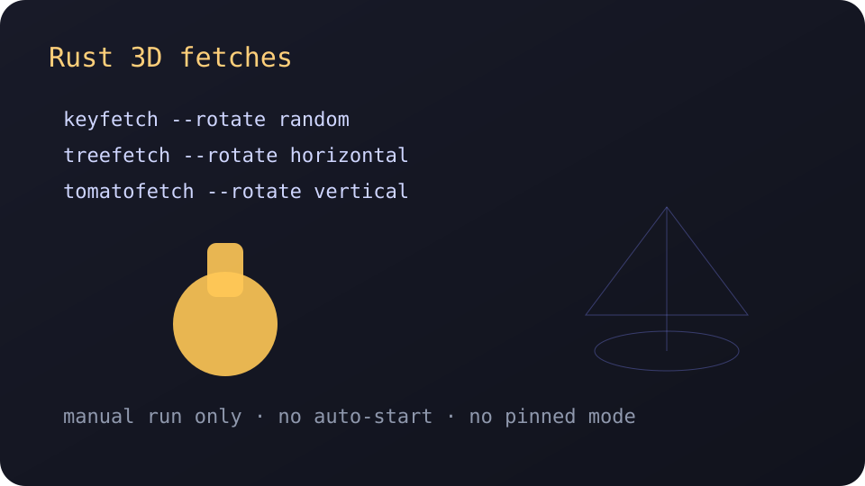

Caelestia
caelestia-cli from the AUR plus caelestia install (Arch only); upstream chooses the components.
- SDDM is a separate option
- Bibata cursors are separate
- Debian is best-effort
Arch / Debian · Wayland · Material You
My personal setup based on end-4/dots-hyprland: configs, a modular multitool, Rust 3D fetches, and fastfetch presets. Full interactive install with checkboxes; modules are downloaded only when needed.
Visuals
The site and tools are built for quick browsing: great on desktop, easy to use on mobile.


Profiles
Full install is a four-step wizard; everything is optional: SDDM, Caelestia, Bibata cursors and maximum monitor refresh are enabled only if you choose them.
caelestia-cli from the AUR plus caelestia install (Arch only); upstream chooses the components.
My overrides on top of end-4/dots-hyprland: custom Hyprland, Quickshell config, keybinds, cursor, env. Keys live only in the keyring.
External Serpantinum installer via the multitool, plus presets/themes from the repo.
config/themes/My dotfiles: fish, nvim presets, end-4 config, fastfetch presets, Rust 3D fetches.
3D Fetches
The old, unstable C sources are kept as legacy, but working binaries are now built from config/fetches/stylish-fetches. No terminal auto-start and no pinned mode — only an explicit command.
keyfetch --rotate random
treefetch --rotate horizontal --accent green
tomatofetch --rotate vertical --rainbow
stoolfetch --height 18 --no-info
skeletonfetch --rotate random --color goldFastfetch presets
The installer can place a preset at ~/.config/fastfetch/config.jsonc and backs up the old file.
A balanced set of default modules.
Your compact style: small logo, short keys, minimal visual noise.
Ultra-short output: 4 lines, just the essentials.
Nerd Font icons, focused on looks.
A broad set of info for most systems.
bash install/install.sh
# Install software → Fetches → Fastfetch presets
# choose: default / mine / micro / stylish / universalInstall
With one command:
curl -fsSL https://raw.githubusercontent.com/stylishlasher/stylish-dots/main/install/install.sh | bashAdapted version:
curl -fsSL https://raw.githubusercontent.com/stylishlasher/stylish-dots/main/install/install_debian.sh | bashgit clone https://github.com/stylishlasher/stylish-dots.git
cd stylish-dots
bash config/end4/install.shcd stylish-dots/config/fetches/stylish-fetches
cargo build --release
install -m755 target/release/*fetch ~/.local/bin/modules/.Credits
end-4/dots-hyprland by end-4 — the original illogical-impulse. My config/end4/ holds custom overrides.
Serpantinum by Illia Miroshnichenko — a Wayland environment and presets.
fastfetch for system info, and Rust for the rewritten 3D fetches with proper rotation modes.
Easter egg
Press a button and a GIF appears. Works on mobile too.